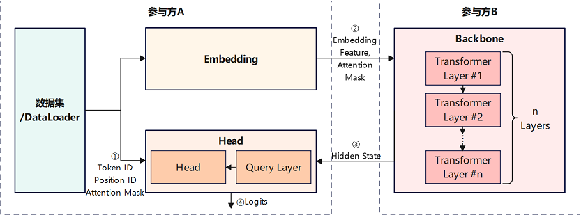
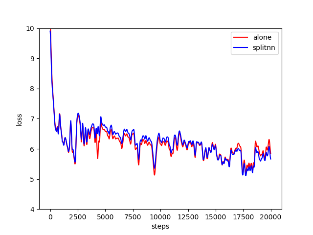

纵向联邦学习模型训练 - 盘古α大模型跨域训练¶

概述¶
随着硬件算力的进步和网络数据规模的持续膨胀，预训练大模型已日趋成为自然语言处理、图文多模态等领域的重要研究方向。以2021年发布中文NLP预训练大模型的盘古α为例，其模型参数量达2000亿，训练过程依赖海量数据和先进计算中心，限制了其应用落地和技术演进。一种可行的解决方案是基于纵向联邦学习或拆分学习（Split Learning）技术，整合多参与方的算力和数据资源，在确保安全隐私的前提下，实现预训练大模型的的跨域协同训练。
MindSpore Federated提供基于拆分学习的纵向联邦学习基础功能组件。本样例以盘古α模型为例，提供了面向NLP大模型的联邦学习训练样例。

如上图所示，该案例中，盘古α模型被依次切分为Embedding、Backbone、Head等3个子网络。其中，前级子网络Embedding和末级子网络Head部署在的参与方A网络域内，包含多级Transformer模块的Backbone子网络部署在参与方B网络域内。Embedding子网络和Head子网络读取参与方A所持有的数据，主导执行盘古α模型的训练和推理任务。
前向推理阶段，参与方A采用Embedding子网络处理原始数据后，将输出的Embedding Feature特征张量和Attention Mask特征张量传输给参与方B，作为参与方B Backbone子网络的输入。然后，参与方A读取Backbone子网络输出的Hide State特征张量，作为参与方A Head子网络的输入，最终由Head子网络输出预测结果或损失值。
反向传播阶段，参与方A在完成Head子网络的梯度计算和参数更新后，将Hide State特征张量所关联的梯度张量，传输给参与方B，用于Backbone子网络的梯度计算和参数更新。然后，参与方B在完成Backbone子网络的梯度计算和参数更新后，将Embedding Feature特征张量所关联的梯度张量，传输给参与方A，用于Embedding子网络的梯度计算和参数更新。
上述前向推理和反向传播过程中，参与方A和参与方B交换的特征张量和梯度张量，均采用隐私安全机制和加密算法进行处理，从而无需将参与方A所持有的数据传输给参与方B，即可实现两个参与方对网络模型的协同训练。由于Embedding子网络和Head子网络参数量较少，而Backbone子网络参数量巨大，该应用样例适用于业务方（对应参与方A）与计算中心（对应参与方B）的大模型协同训练或部署。
盘古α模型原理的详细介绍，可参考MindSpore ModelZoo - pangu_alpha、鹏程·盘古α介绍，及其研究论文。
准备环节¶
环境准备¶
参考获取MindSpore Federated，安装MindSpore 1.8.1及以上版本和MindSpore Federated。
下载MindSpore Federated代码，安装本应用样例依赖的Python软件包。
git https://gitee.com/mindspore/federated.git cd federated/example/splitnn_pangu_alpha/ python -m pip install -r requirements.txt
数据集准备¶
在运行样例前，需参考MindSpore ModelZoo - pangu_alpha - Dataset Generation，采用preprocess.py脚本将用于训练的原始文本语料，转换为可用于模型训练的数据集。
定义纵向联邦学习训练过程¶
MindSpore Federated纵向联邦学习框架采用FLModel（参见纵向联邦学习模型训练接口）和yaml文件（参见纵向联邦学习yaml详细配置项），建模纵向联邦学习的训练过程。
定义网络模型¶
采用MindSpore提供的功能组件，以nn.Cell（参见mindspore.nn.Cell）为基类，编程开发本参与方待参与纵向联邦学习的训练网络。以本应用实践中参与方A的Embedding子网络为例，示例代码如下：
class EmbeddingLossNet(nn.Cell): """ Train net of the embedding party, or the tail sub-network. Args: net (class): EmbeddingLayer, which is the 1st sub-network. config (class): default config info. """ def __init__(self, net: EmbeddingLayer, config): super(EmbeddingLossNet, self).__init__(auto_prefix=False) self.batch_size = config.batch_size self.seq_length = config.seq_length dp = config.parallel_config.data_parallel self.eod_token = config.eod_token self.net = net self.slice = P.StridedSlice().shard(((dp, 1),)) self.not_equal = P.NotEqual().shard(((dp, 1), ())) self.batch_size = config.batch_size self.len = config.seq_length self.slice2 = P.StridedSlice().shard(((dp, 1, 1),)) def construct(self, input_ids, position_id, attention_mask): """forward process of FollowerLossNet""" tokens = self.slice(input_ids, (0, 0), (self.batch_size, -1), (1, 1)) embedding_table, word_table = self.net(tokens, position_id, batch_valid_length=None) return embedding_table, word_table, position_id, attention_mask
在yaml配置文件中，描述训练网络对应的名称、输入、输出等信息。以本应用实践中参与方A的Embedding子网络为例，示例代码如下：
train_net: name: follower_loss_net inputs: - name: input_ids source: local - name: position_id source: local - name: attention_mask source: local outputs: - name: embedding_table destination: remote - name: word_table destination: remote - name: position_id destination: remote - name: attention_mask destination: remote
其中，
name字段为训练网络名称，将用于命名训练过程中保存的checkpoints文件。inputs字段为训练网络输入张量列表，outputs字段为训练网络输出张量列表。inputs和outputs字段下的name字段，为输入/输出张量名称。输入/输出张量的名称和顺序，需要与训练网络对应Python代码中construct方法的输入/输出严格对应。inputs字段下的source字段标识输入张量的数据来源，local代表输入张量来源于本地数据加载，remote代表输入张量来源于其它参与方网络传输。outputs字段下的destination字段标识输出张量的数据去向，local代表输出张量仅用于本地，remote代表输出张量将通过网络传输给其它参与方。可选的，采用类似方法建模本参与方待参与纵向联邦学习的评估网络。
定义优化器¶
采用MindSpore提供的功能组件，编程开发用于本参与方训练网络参数更新的优化器。以本应用实践中参与方A用于Embedding子网络训练的自定义优化器为例，示例代码如下：
class PanguAlphaAdam(TrainOneStepWithLossScaleCell): """ Customized Adam optimizer for training of pangu_alpha in the splitnn demo system. """ def __init__(self, net, optim_inst, scale_update_cell, config, yaml_data) -> None: # 自定义优化器相关算子 ... def __call__(self, *inputs, sens=None): # 定义梯度计算和参数更新过程 ...
开发者可自定义优化器类的
__init__方法的输入输出，但优化器类的__call__方法的输入需仅包含inputs和sens。其中，inputs为list类型，对应训练网络的输入张量列表，其元素为mindspore.Tensor类型。sens为dict类型，保存用于计算训练网络参数梯度值的加权系数，其key为str类型的梯度加权系数标识符；value为dict类型，其key为str类型，是训练网络输出张量名称，value为mindspore.Tensor类型，是该输出张量对应的训练网络参数梯度值的加权系数。在yaml配置文件中，描述优化器对应的梯度计算、参数更新等信息。示例代码如下：
opts: - type: CustomizedAdam grads: - inputs: - name: input_ids - name: position_id - name: attention_mask output: name: embedding_table sens: hidden_states - inputs: - name: input_ids - name: position_id - name: attention_mask output: name: word_table sens: word_table params: - name: word_embedding - name: position_embedding hyper_parameters: learning_rate: 5.e-6 eps: 1.e-8 loss_scale: 1024.0
其中，
type字段为优化器类型，此处为开发者自定义优化器。grads字段为优化器关联的GradOperation列表，优化器将使用列表中GradOperation算子计算输出的梯度值，更新训练网络参数。inputs和output字段为GradOperation算子的输入和输出张量列表，其元素分别为一个输入/输出张量名称。sens字段为GradOperation算子的梯度加权系数或灵敏度（参考mindspore.ops.GradOperation）的标识符。params字段为优化器即将更新的训练网络参数名称列表，其元素分别为一个训练网络参数名称。本示例中，自定义优化器将更新名称中包含word_embedding字符串和position_embedding字符串的网络参数。hyper_parameters字段为优化器的超参数列表。
定义梯度加权系数计算¶
根据梯度计算的链式法则，位于全局网络后级的子网络，需要计算其输出张量相对于输入张量的梯度值，即梯度加权系数或灵敏度，传递给位于全局网络前级的子网络，用于其训练参数更新。
MindSpore Federated采用GradOperation算子，完成上述梯度加权系数或灵敏度计算过程。开发者需在yaml配置文件中，描述用于计算梯度加权系数的GradOperation算子。以本应用实践中参与方A的Head为例，示例代码如下：
grad_scalers:
- inputs:
- name: hidden_states
- name: input_ids
- name: word_table
- name: position_id
- name: attention_mask
output:
name: output
sens: 1024.0
其中，inputs和output字段为GradOperation算子的输入和输出张量列表，其元素分别为一个输入/输出张量名称。sens字段为该GradOperation算子的梯度加权系数或灵敏度（参考mindspore.ops.GradOperation），如果为float或int型数值，则将构造一个常量张量作为梯度加权系数，如果为str型字符串，则将从其它参与方经网络传输的加权系数中，解析名称与其对应的张量作为加权系数。
执行训练¶
完成上述Python编程开发和yaml配置文件编写后，采用MindSpore Federated提供的
FLModel类和FLYamlData类，构建纵向联邦学习流程。以本应用实践中参与方A的Embedding子网络为例，示例代码如下：embedding_yaml = FLYamlData('./embedding.yaml') embedding_base_net = EmbeddingLayer(config) embedding_eval_net = embedding_train_net = EmbeddingLossNet(embedding_base_net, config) embedding_with_loss = _VirtualDatasetCell(embedding_eval_net) embedding_params = embedding_with_loss.trainable_params() embedding_group_params = set_embedding_weight_decay(embedding_params) embedding_optim_inst = FP32StateAdamWeightDecay(embedding_group_params, lr, eps=1e-8, beta1=0.9, beta2=0.95) embedding_optim = PanguAlphaAdam(embedding_train_net, embedding_optim_inst, update_cell, config, embedding_yaml) embedding_fl_model = FLModel(yaml_data=embedding_yaml, network=embedding_train_net, eval_network=embedding_eval_net, optimizers=embedding_optim)
其中，
FLYamlData类主要完成yaml配置文件的解析和校验，FLModel类主要提供纵向联邦学习训练、推理等流程的控制接口。调用
FLModel类的接口方法，执行纵向联邦学习训练。以本应用实践中参与方A的Embedding子网络为例，示例代码如下：if opt.resume: embedding_fl_model.load_ckpt() ... for epoch in range(50): for step, item in enumerate(train_iter, start=1): # forward process step = epoch * train_size + step embedding_out = embedding_fl_model.forward_one_step(item) ... # backward process embedding_fl_model.backward_one_step(item, sens=backbone_scale) ... if step % 1000 == 0: embedding_fl_model.save_ckpt()
其中，
forward_one_step方法和backward_one_step方法分别执行一个数据batch的前向推理和反向传播操作。load_ckpt方法和save_ckpt方法分别执行checkpoints文件的加载和保存操作。
运行样例¶
本样例提供2个示例程序，均以Shell脚本拉起Python程序的形式运行。
run_pangu_train_local.sh：单进程示例程序，参与方A和参与方B同一进程训练，其以程序内变量的方式，直接传输特征张量和梯度张量至另一参与方。run_pangu_train_leader.sh和run_pangu_train_follower.sh：多进程示例程序，参与方A和参与方B分别运行一个进程，其分别将特征张量和梯度张量封装为protobuf消息后，通过https通信接口传输至另一参与方。run_pangu_train_leader.sh和run_pangu_train_follower.sh可分别在两台服务器上运行，实现跨域协同训练。当前纵向联邦分布式训练支持https跨域加密通信，启动命令如下：
# 以https加密通信的方式启动leader进程： bash run_pangu_train_leader.sh 127.0.0.1:10087 127.0.0.1:10086 /path/to/train/data_set /path/to/eval/data_set True server_cert_password client_cert_password /path/to/server_cert /path/to/client_cert /path/to/ca_cert # 以https加密通信的方式启动follower进程： bash run_pangu_train_follower.sh 127.0.0.1:10086 127.0.0.1:10087 True server_cert_password client_cert_password /path/to/server_cert /path/to/client_cert /path/to/ca_cert
运行单进程样例¶
run_pangu_train_local.sh为例，运行示例程序的步骤如下：
进入示例程序目录：
cd federated/example/splitnn_pangu_alpha/
以wiki数据集为例，拷贝数据集至示例程序目录：
cp -r {dataset_dir}/wiki ./
安装依赖的Python软件包：
python -m pip install -r requirements.txt
修改
src/utils.py，配置checkpoint文件加载路径、训练数据集路径、评估数据集路径等参数，示例如下：parser.add_argument("--load_ckpt_path", type=str, default='./checkpoints', help="predict file path.") parser.add_argument('--data_url', required=False, default='./wiki/train/', help='Location of data.') parser.add_argument('--eval_data_url', required=False, default='./wiki/eval/', help='Location of eval data.')
执行训练脚本：
./run_pangu_train_local.sh
查看训练日志
splitnn_pangu_local.txt中记录的训练loss信息。INFO:root:epoch 0 step 10/43391 loss: 10.616087 INFO:root:epoch 0 step 20/43391 loss: 10.424824 INFO:root:epoch 0 step 30/43391 loss: 10.209235 INFO:root:epoch 0 step 40/43391 loss: 9.950026 INFO:root:epoch 0 step 50/43391 loss: 9.712448 INFO:root:epoch 0 step 60/43391 loss: 9.557744 INFO:root:epoch 0 step 70/43391 loss: 9.501564 INFO:root:epoch 0 step 80/43391 loss: 9.326054 INFO:root:epoch 0 step 90/43391 loss: 9.387547 INFO:root:epoch 0 step 100/43391 loss: 8.795234 ...
对应的可视化结果如下图所示，其中横轴为训练步数，纵轴为loss值，红色曲线为盘古α训练loss值，蓝色曲线为本示例中基于拆分学习的盘古α训练loss值。二者loss值下降的趋势基本一致，考虑到网络参数值初始化具有随机性，可验证训练过程的正确性。

运行多进程样例¶
类似单进程样例，进入示例程序目录，安装依赖的Python软件包：
cd federated/example/splitnn_pangu_alpha/ python -m pip install -r requirements.txt
拷贝数据集至服务器1的示例程序目录：
cp -r {dataset_dir}/wiki ./
在服务器1启动参与方A的训练脚本：
./run_pangu_train_leader.sh {ip_address_server1} {ip_address_server2} ./wiki/train ./wiki/train
训练脚本的第1个参数是本地服务器（服务器1）的IP地址和端口号，第2个参数是对端服务器（服务器2）的IP地址和端口号，第3个参数是训练数据集文件路径，第4个参数是评估数据集文件路径，第5个参数标识是否加载已有的checkpoint文件。
在服务器2启动参与方B的训练脚本：
./run_pangu_train_follower.sh {ip_address_server2} {ip_address_server1}
训练脚本的第1个参数是本地服务器（服务器2）的IP地址和端口号，第2个参数是对端服务器（服务器2）的IP地址和端口号，第3个参数标识是否加载已有的checkpoint文件。
查看服务器1的训练日志
leader_processs.log中记录的训练loss信息。若其loss信息与盘古α集中式训练loss值趋势一致，可验证训练过程的正确性。